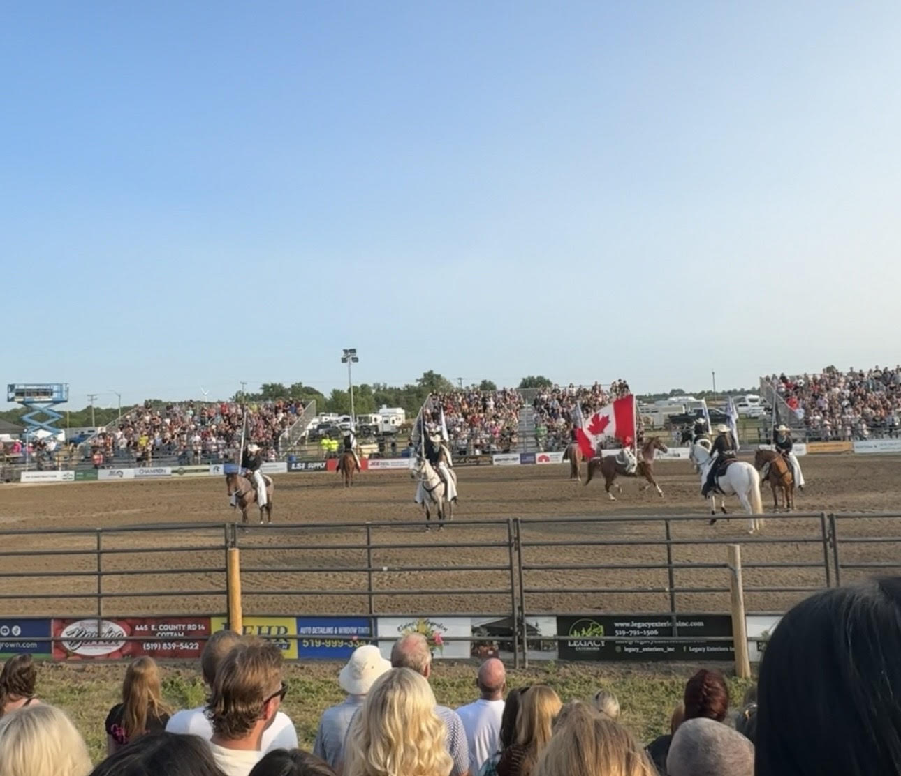

Bahamas
I have had the chance to go to the Bahamas twice now, and both times were amazing because it truly feels like paradise. I would highly recommend making that trip to the Bahamas to anyone. This is a picture from the last time I was out there.

The first place I'd like to show is Mexico. The picture below is from Mexico City from when I visited it two winters ago. My family is from a city in Michoacán called Zamora, which has many historical figures.
The next place I have been to is Canada, which I visit quite often since I have family that lives up there. In the following picture, you can see a rodeo I attended the last time I was in Canada.
I have had the chance to go to the Bahamas twice now, and both times were amazing because it truly feels like paradise. I would highly recommend making that trip to the Bahamas to anyone. This is a picture from the last time I was out there.